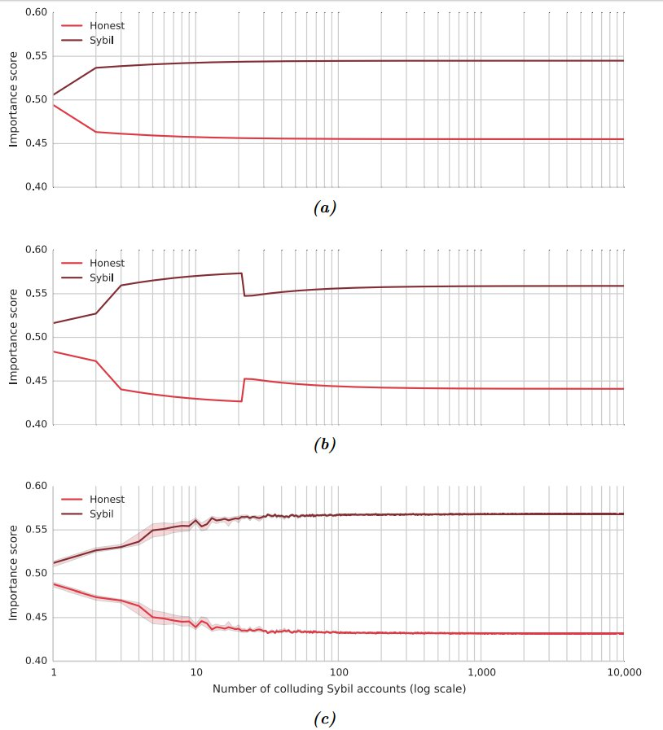

攻撃への耐性
NCDawareRank, 権利確定済の（vested）残高、重み付けられたアウトリンク、そして最後の合算によって算出しているため、 重要度スコアはいかなる攻撃に対しても高い頑健性を示します。
7.6.1 Sybil Attack
一般にP2Pシステムでは、悪意のある主体や何らかの問題がある主体が複数のアイデンティティとしてシステムにやってきてコントロールを奪おうとすることがあり、これをSybil Attackと呼びます。
NEMではブロックの収穫に対して手数料という形での経済的インセンティブがあり、（5.3節: ブロックの作成 を参照） 重要度が高いアカウントはブロックを収穫する可能性が高くなります。 結果としてSybil attackをする強いインセンティブが攻撃者側に生じることが予想されますので、PoIアルゴリズムのデザインの際にはそのような攻撃を考慮に入れなくてはなりません。 重要度スコアがNCDawareRank、権利確定済の（vested）残高、重み付き総アウトリンクを用いて計算されている事によって、Sybil attackが難しくなります。
重要度計算という観点で見ると、Sybil attackをする側からは以下のような攻撃が考えられます。
- アカウントを分割してそれらのアカウント間でトランザクションを繰り返してNCDawareRankを上げる
- アカウントを分割してランダムなアカウントとトランザクションをやり取りする。
- アウトリンクスコアを上昇させるために、XEMをアカウント間でループさせる。
以下がその対応策です。
- グラフ理論に基づいた重要度の指標として、PageRankの代わりにNCDawareRankを用いる。
- レベル間近似度行列の導入によって、NCDawareRankはPageRankよりもスパムリンクによるランク操作(link spamming)に対して堅牢になります。 webページの場合、大量のサイトを作成してそれらからメインのサイトへのリンクを張り、メインサイトのPageRankを増長させるというスパム手法が良くとられます。NEMで似たような行為を行おうとすると、メインのアカウントが残高の一部をいったん配り、その後メインのアカウントに戻す。といった形になります。
- 残高を権利確定させる際、一定のスケジュールに基づいて行わなくてはならなず、これは人間にとって「遅い」。
- アカウントに権利を確定して残高を流入させる際に数週間かかるようになっているので、即座に大量のXEMをゲットしてネットワークを攻撃することができないようになっています。
- アウトリンクスコアの計算に、XEMの流出入を総合したものを用いる。
- XEMの流出（アウトリンク）だけでなく、流入（インリンク）も考慮したうえで重要度を計算するので、内輪でXEMをやり取りしても、内向きの流れで外向きの流れはキャンセルされ、重要度は上がりません。
- アウトリンクに、時間がたつにつれて弱くなるように重みを付ける。
- 外向きの支払いがもつ重みは時間が経つにつれて減少していくので、XEMを別のアカウントに送ることは、一時的に重要度スコアをブーストさせる効果しかありません。
- 全重要度の合計が一定になるようにノーマライズする。
- これにより他のアカウントの行動が、自分の重要度スコアに影響します。
- 収穫に参加するために最低でも10000以上の権利確定済の（vested）XEMが必要。
- これにより、Sybil attackに参加できるアカウント数に理論上の上限ができます。
- ,の値として、比較的小さな値を選ぶ
- これにより、重要度の大部分は、不正操作しにくい権利確定済の（vested）XEMの量で決まります。
これらの対策がまとめられることで、Proof-of-ImportanceにSybil attack様の攻撃に対しての堅牢さをもたらします。 その検証のために、Sybil-attackのシミュレーションを10,000回繰り返しました。図10は以下の3種の条件下でのシミュレーションの結果です。
- 攻撃アカウントが、お互いにXEMを送信しあうループを形成する。
- 全ての攻撃アカウントが、共通の攻撃アカウントにXEMを送信する。
- 攻撃アカウントが相手をランダムに選び、お互いにXEMを送信しあう。
図10からわかるように、攻撃者がアカウントを増やしていった場合、初めのうちは重要度を増大させていきますが、そこからは数千アカウントを足していっても無意味になることがわかります。 攻撃者は誠実なアクターよりも多少多くの重要度を手にすることにはなりますが、それはPoIの計算時に上限が課せられます。 主体によっては、アカウントを分割してアカウント間で経済活動を行っているフリをすることで重要度を上げることも不可能ではありませんが、全重要度の合計は一定の値になるため、他の主体も同様のことをすれば優位は消失します。
PoWのマイニングに比べると、PoIの場合は仕様を逆手にとって得られる優位は小さいと言えます。 PoWの場合、専用のハードウェアを購入したマイナーは、汎用ビデオカード（GPU）を使用するマイナーに対して大きく優位に立つことができます。 これを書いている時点で
- 800Mhash/s のマイニングパワーを持つビデオカード2つ
- 800000Mhash/s のマイニングパワーを持つ専用ASIC
を同じ値段で購入することができます。その差は実に約1000倍です。 PoIではアルゴリズム上の制限があるため、完璧な戦略で仕様をハックしても、そうでない主体に比べて得られるメリットはこれよりもはるかに低い桁です。
攻撃者の操作するアカウントが単一のマスターアカウントに送信する場合、アカウント数が増えると重要度はむしろ下がるということが図10bからわかります。 図中で閾値を超えると重要度がいったん下がっているのは、攻撃者のノードが違うクラスタに所属することで、トポロジー別の重みが1.0から0.9になったためです。
7.6.2 ループ攻撃
ループ攻撃では、同一主体によって操作されたアカウントが送金トランザクションによってXEMを送りあうことで重要度スコアを上げようと試みるものとします。 アカウントの重要度を計算するにあたって、外向きのXEM送金量はその大部分を占めますが、実際には総送金量として計算されますので、内向きの送金によって相殺されます。 したがって、1000XEMをループ内で何百万回やり取りしたところで、実際には一度だけ送信するのと変わらないのです。
図10

80億XEMを持ち、4億XEMを外向きに送金した際の、重要度の推移のグラフ。 誠実な主体はXEMを一か所にとどめておくのに対し、Sybil attackを行う主体は
- (a) 自身の操作しているアカウント間でループ状に送信する
- (b) 自身の操作しているアカウントにて権利を確定（vest）し、その後単一のマスターアカウントに送り返す
- (c) 操作しているアカウントからランダムなアカウントに送る
y軸が重要度スコアでx軸が攻撃者の操作するアカウントの数。(c)の図では、10回の検証時の95%信頼区間と平均値をプロットしている。